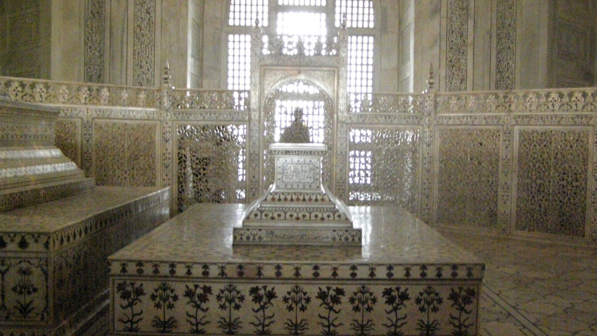
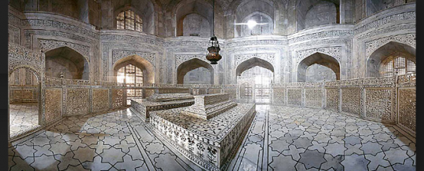
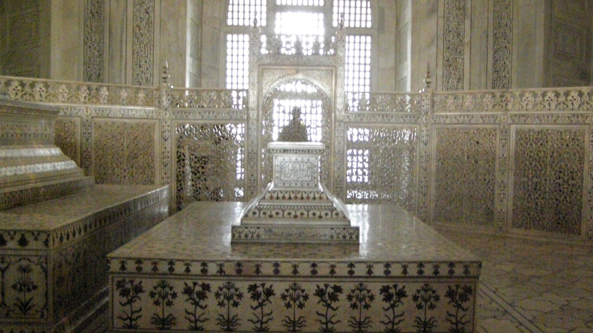
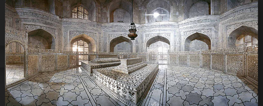
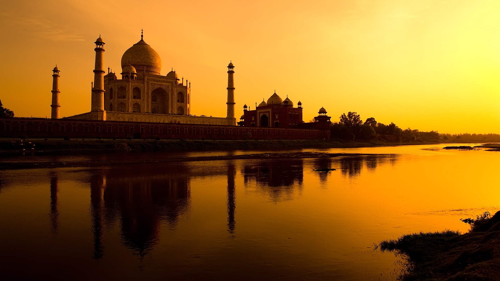
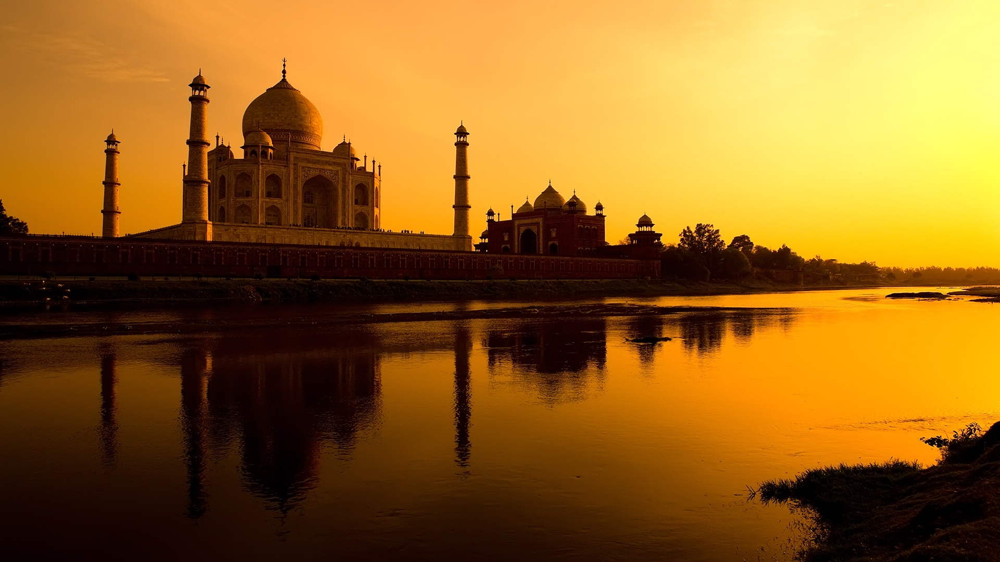

Tour Package Detailed Itinerary
| Day |
Time |
Activity |
Meals provided |
Additional Remarks |
| Day 1 |
0500hrs - 0900hrs |
A driver would be booked in advance to pick you up from New Delhi at 0500 hrs. In a luxuious vehicle with ample leg space and a huge car boot to place your personal belongings, so you may travel in comfort.
The driver would then start the 3 hours drive towards Agra with 2 pit stops in between, 30 minutes each, for you to take a walk around the storehouses and shops set up in the pit stops. They have beautiful handmade jewelery and crafts.
|
Yes, lunch will be provided for Day 1 |
Entry tickets cost to Taj Mahal and Agra Fort will be included in the tour package cost. |
| 0900hrs - 1200hrs |
Agra is located in the northern state of Uttar Pradesh in India. Upon your arrival in Agra, a representative who is allocated to you beforehand, will meet you and bring you to the heritage site of Taj Mahal.
Taj Mahal was built by Mughal Emperor Shah Jahan in the memory of his wife Arjumand Bano Begum, also known as Mumtaz Mahal. THe construction of this beautiful white monument was started in year 1631.
There were about 22,000 workers and 1,000 elephants who took part in the contruction and was finished building in 1653, after 22 years. Taj Mahal is one of the Seven Wonders of the World an has been enlisted as a UNESCO World Heritage site.
There also has been rumours that the Emperor Shah Jahan had ordered his trusted men, to cut off the hands of the 22,000 workers who built the site to ensure that no other of its kind would be built.
Currently, there is a rough estimate of 3 million people visiting the Taj Mahal annually. Which also means that with the modern world, there is much more air pollution compared to the past, this poses a threat to the
complex because the white marbled building is being deriorated. |
| 1200hrs - 1330hrs |
Lunch, at the nearby restaurant, Taj Mahal Delicacies. Where they are very well-known for their authentic India cuisines and their cultural design of the restaurant layout.
|
| 1330hrs - 1400hrs |
The Agra Fort is about half an hour walk away from the Taj Mahal Delicacies. You will be led by foot by the representative allocated to you and they will explain more about the Taj Mahal and Agra Fort on the way.
|
| 1400hrs - 1600hrs |
Agra Fort had housed the emperors of the Mughal Dynasty till 1638, where the captical was change to Delhi. The Agra Fort is also a UNESCO World Heritage site.
The fort's colossal double walls are 20 meters hight and measured to be up to 2.5 kilometers in circumference. The fort is also surround by a moat, a protective shield incase of an attack by their enemies. |
| 1600hrs - 1900hrs |
The skilled driver allocated to you for the tour would expertly drive you back to New Delhi or your airport, from here ownwards, the driver would be allocated to you for the rest of the day and you are allowed to choose wherever you like to go. The driver will take you there and wait for you
until the day is over.
|
 




 
